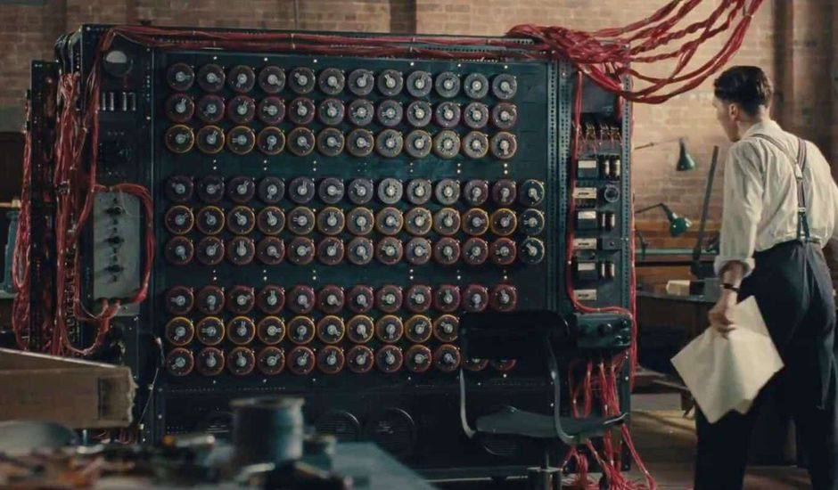
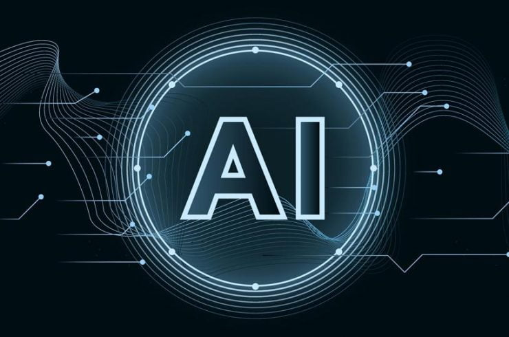
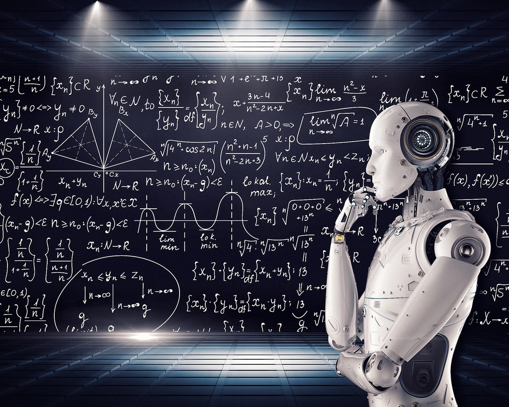

Présentation
Je m'appelle Chevallier Vincent, étudiant en deuxième année de BTS SIO (Services Informatiques aux Organisations), Option SLAM (Solutions Logicielles et Application Métier) l'option spécialisée pour le développement, au lycée du Parc des Loges à Evry. J'ai obtenu mon BAC STMG (Sciences et Technologies du Management et de la Gestion) Spécialité SIG (Systèmes d’Information de Gestion) dans ce même lycée.Projets Professionnels
Je souhaiterais devenir Webmaster après mes études dans le développement Web. Cependant, d'autres domaines professionnels m'intéressent, notamment tout ce qui touche au montage vidéo (effets vidéos, animation 3D etc). Je suis aussi extrêmement intéressé par tout ce qui englobe le domaine eSport.Qu'est ce que le BTS SIO ?
Le Brevet de Technicien Supérieur aux Services Informatiques aux Organisations (BTS SIO), s'adresse à ceux qui souhaitent se former en deux ans sur les métiers d'administrateur réseau ou de développeur. Une fois ce diplôme obtenu, libre à vous de continuer des études approdondies ou de commencer une carrière professionnelle !Le BTS SIO propose deux spécialisations :
Option SLAM L’option Solutions logicielles et applications métiers forme des spécialistes des logiciels (rédaction d’un cahier des charges, formulation des besoins et spécifications, développement, intégration au sein de la société).
Option SISR L’option Solution d’infrastructure, systèmes et réseaux forme des professionnels des réseaux et équipements informatiques (installation, maintenance, sécurité). En sortant d’un BTS SIO SISR, vous serez capables de gérer et d’administrer le réseau d’une société et d’assurer sa sécurité et sa maintenance.
Parcours
Expérience Professionnelle
STAGE INFORMATIQUE - DEVELOPPEUR WEB CHEZ DHT
2020 - 2021
DHT est une boutique de vente et réparation dans le domaine informatique. - Réalisation d'un site marchand professionnelle - Réalisation d'une carte de visite & flyer - Réalisation d'une application de gestion de stock Adresse Postale : 6 Place du 19 Mars 1962, 91000 Evry Numéro de téléphone : 09 88 32 30 69
Formations
BTS SIO (SERVICES INFORMATIQUES AUX ORGANISATIONS)
2019 - 2021
Lycée du Parc des Loges, Option SLAM (Solutions Logicielles et Applications Métiers)
BAC STMG (SCIENCES ET TECHNOLOGIQUES DU MANAGMENT ET DE LA GESTION)
2016 - 2019
Lycée du Parc des Loges, Option SIG (Système d'Information de Gestion)
Centre d'intérêts
MONTAGE VIDEO
2016 - Actuellement
Je fais du montage vidéo depuis plus de 4 ans sur Youtube. Cette passion m'apporte au quotidien rigueur, créativité et demande un surpassement de soi-même permanent. Pouvoir apprécier son travail après être parti de rien est une réelle satisfaction personnelle.
SPORT
2006 - Actuellement
Le sport à toujours été quelque chose de présent dans mon quotidien. J'ai fais du Tennis, Tennis de table, Badminton, Athlétisme.
CREATION DE SITE WEB
2018 - Actuellement
J'ai découvert cette passion grâce à mon Option SIG lors de mon année de terminale avant le BAC. Comme pour le montage, c'est toute la réalisation mettant en avant la créativité qui m'a fait aimer cette activité.
REGARDER DES ANIMÉS
2010 - Actuellement
Regarder des animés est aussi l'un de mes hobbies. J'aime bien découvrir des univers, des histoires, des façons de penser différentes de la mienne à travers l'animation. Cela me permet aussi de découvrir des styles/design nouveaux et d'en prendre bon usage pour mes sites web ou autres activités.
Mes projets
Voici l'historique de mes projets informatique les plus importants, selon moi, depuis mon apprentissage en informatique !
Veille Technologique
Qu'est ce qu'une veille Technologique ?
La veille technologique comprend plusieurs choses comme la collecte, le partage et la diffusion d’informations permettant d’anticiper ou de s’informer sur des changements en matière de recherches, développement, brevets, lancement de nouveaux produits, matériaux, innovations, etc… Afin d’évaluer l’impact sur l’environnement et l’organisation. La veille technologique demande de surveiller et d'analyser la moindre information concernant le sujet traité afin de mieux suivre l'évolution de cette technologie et de ne pas être dépassé par le progrès technologique.
Quel est le thème de ma veille technologique ?
Mon thème de veille technologique portera sur l'intelligence artificielle ! L'intelligence artificielle est l'ensemble des théories et des techniques développant des programmes informatiques complexes capables de simuler certains traits de l'intelligence humaine (raisonnement, apprentissage…). Pour réaliser cette veille j'ai du utiliser plusieurs outils me permettant de collecter les informations comme notamment ...
Article 1
Histoire de l'intelligence artificielle Sous le terme intelligence artificielle (IA) on regroupe l’ensemble des “théories et des techniques mises en œuvre en vue de réaliser des machines capables de simuler l’intelligence.” Cette pratique permet à l’Homme de mettre un système informatique sur la résolution de problématiques complexes intégrant de la logique. Les premières traces de l’IA remontent à 1950 dans un article d’Alan Turing intitulé “Computing Machinery and Intelligence” dans lequel le mathématicien explore le problème de définir si une machine est consciente ou non. Publié le 20 août 2018 à 11h45 - Mis à jour le 18 décembre 2020
Article 2
A quoi ressemblera l'intelligence artificielle ? Les premiers mois de 2020 ont radicalement transformé notre façon de travailler et de faire les choses. Alors que l’utilisation à grande échelle des robotaxis ou des camions de marchandises à conduite automatique n’est pas encore en place, la pandémie de Covid-19 a précipité l’introduction de l’intelligence artificielle dans toutes les industries. Qu’il s’agisse du traçage des épidémies ou des interactions sans contact avec les clients, l’impact a été immédiat, mais il offre également une fenêtre sur ce qui va suivre... Publié le 16 juillet 2020
Article 3
L'IA : Les 4 principales tendances de 2021 L’IA reste sans aucun doute une tendance clé lorsqu’il s’agit de choisir les technologies qui changeront notre façon de vivre, de travailler et de jouer dans un avenir proche. - Des analyses et des aperçus plus intelligents sur les grandes données - Détection et prévention automatisées - L’activité économique en plein essor – Prévoir la transformation des comportements - Éliminer la prochaine pandémie avant même qu’elle ne commence Publié le 23 septembre 2020
Article 4
2021 est l'année qui fera briller l'intelligence artificielle Les problèmes liés à l'IA demeurent : manque de confiance, mauvaise qualité des données, manque de données pour certains, et manque d'outils et de talents appropriés. En 2021, les entreprises et les dirigeants de niveau C s'attaqueront de front à certains de ces défis, non pas parce qu'ils le veulent, mais parce qu'ils doivent le faire. - L'IA et l'apprentissage machine (ML) imprègneront les nouveaux cas d'utilisation et les nouvelles expériences. - L'intelligence artificielle sur le lieu de travail renforcera les besoins d'automatisation et d'augmentation. - Il y aura davantage de progrès vers des données fiables pour l'IA. Publié le Le 4 novembre 2020 à 09:51
Article 5
L’impact de l’intelligence artificielle en 2021 L’IA évolue conformément à ses deux raisons d’être initiales qui sont l’automatisation (pour nous libérer du temps) et l’optimisation des processus de décisions (pour en prendre de meilleures). C’est ce qui aura le plus d’impact visible sur nos vies en 2021… Nous rendre la vie plus facile. - L'apprentissage au profit de l'humaine (Optimisation et sécurisation accrues sur les données.) - La bourse (Financement qui les propulse vers de nouveaux horizons.) - Le collectivisme social (Surveillance active sur la propagation des contrefaçons des plateformes.) - La démocratisation (L’apprentissage virtuel ou en réalité augmentée avec l’aide de plateformes spécialisées) - L'éthique (Canada lance une stratégie nationale en matière d’IA en 2017) Publié le 7 janvier 2021